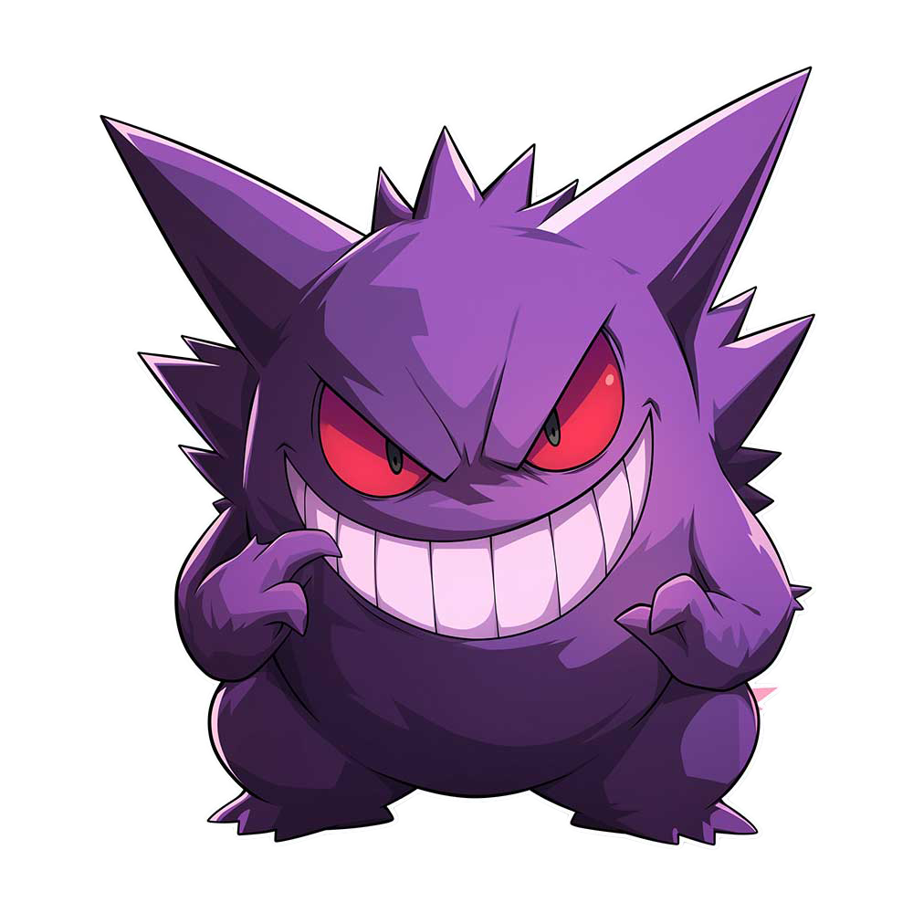

Software, Automatisierung und digitale Werkzeuge — gebaut irgendwo zwischen Nacht, Kosmos und kontrolliertem Chaos.
DarkIdentity
CustomTools
OpenSource

Öffentliche Repositories von @noctherias werden geladen.
Eine digitale Identität zwischen Nacht, Technik und dunkler Ästhetik.
Diese Seite ist bewusst auf eine einzige Bildschirmfläche reduziert. Keine klassische Portfolio-Seite, sondern eine kompakte Oberfläche für Projekte, Code und Experimente.